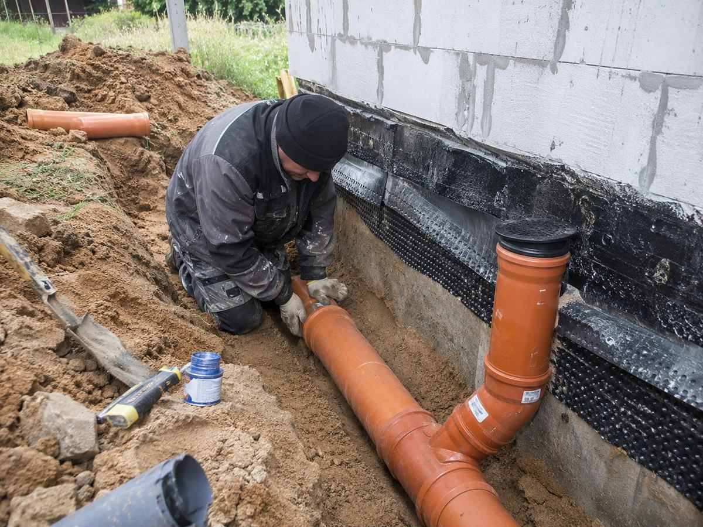

Главная / Услуги / Вода и канализация
Направление 02
Водоснабжение и канализация
Монтируем и обслуживаем системы водоснабжения и канализации в частных домах и на объектах организаций.
+375 (29) 162-00-82
Состав работ
Что делаем
- Ввод воды в домНаружный водопровод от колодца, скважины или центральной сети.
- Наружная канализацияПрокладка труб от дома до септика или центральной сети.
- Септики и колодцы из ЖБИКольца привозим сами и сразу монтируем.
- Внутренняя разводкаТрубы воды и канализации внутри дома, подключение сантехники.
- Обслуживание и ремонтУстранение протечек и засоров, замена участков труб.